2025年北京市中考数学真题 原卷解析
2025年北京市初中学业水平考试
数学试卷
姓名_______ 准考证号 考场号 座位号
考生须知
1．本试卷共6页，共两部分，三道大题，28道小题．满分100分．考试时间120分钟．
2．在试卷和草稿纸上准确填写姓名、准考证号、考场号和座位号．
3．试题答案一律填涂或书写在答题卡上，在试卷上作答无效．
4．在答题卡上，选择题、作图题用2B铅笔作答，其他试题用黑色字迹签字笔作答．
5．考试结束，将本试卷、答题卡和草稿纸一并交回．
第一部分 选择题
一、选择题（共16分，每题2分）
第1-8题均有四个选项，符合题意的选项只有一个．
1. 下列图形中，既是轴对称图形又是中心对称图形 是（ ）
是（ ）
A.
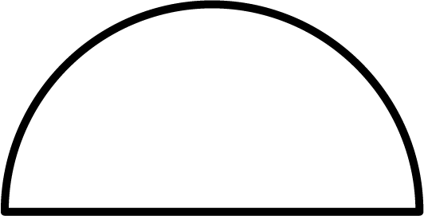
B.  C.
C.  D.
D. 
【答案】D
【解析】
【分析】本题考查了轴对称图形，中心对称图形的识别，解题的关键在于熟练掌握：在平面内，一个图形沿一条直线折叠，直线两旁的部分能够完全重合的图形叫做轴对称图形；在平面内，把一个图形绕着某个点旋转 ，如果旋转后的图形能与原来的图形重合，那么这个图形叫做中心对称图形．
，如果旋转后的图形能与原来的图形重合，那么这个图形叫做中心对称图形．
据此即可求解．
【详解】解：A、该图形是轴对称图形，不是中心对称图形，不符合题意；
B、该图形是轴对称图形，不是中心对称图形，不符合题意；
C、该图形是中心对称图形，不是轴对称图形，不符合题意；
D、该图形既 轴对称图形又是中心对称图形，符合题意，
轴对称图形又是中心对称图形，符合题意，
故选：D．
2. 实数a，b在数轴上的对应点的位置如图所示，下列结论中正确的是（ ）
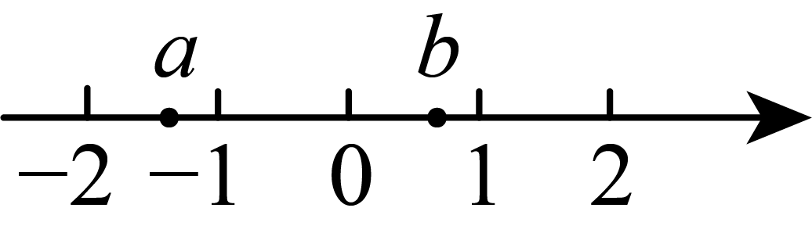
A.  B.
B.  C.
C.  D.
D. 
【答案】D
【解析】
【分析】本题考查了根据点在数轴的位置判断式子的正负，绝对值的意义，利用数轴表示有理数的大小，正确掌握相关性质内容是解题的关键．
先由数轴得，
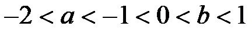
，且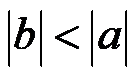
，再逐项分析即可．【详解】解：由数轴得，，且
∴
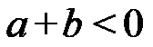
，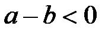
，故A，B，C均错误，不符合题意，D正确，符合题意，
故选：D．
3. 若一个六边形的每个内角都是 ，则x的值为（ ）
，则x的值为（ ）
A. 60B. 90C. 120D. 150
【答案】C
【解析】
【分析】本题考查了多边形内角和公式，即
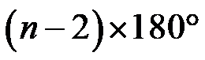
，其中 为边数，利用多边形内角和公式及正多边形的性质求解即可．
为边数，利用多边形内角和公式及正多边形的性质求解即可．【详解】解：∵一个六边形的每个内角都是，
∴每个内角的度数为：
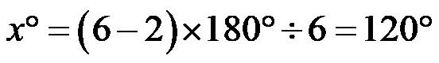
，故选：C．
4. 一个不透明的袋子中仅有3个红球、2个黄球和1个白球，这些球除颜色外无其他差别．从袋子中随机摸出一个球，摸出的球是白球的概率是（ ）
A.  B.
B.  C.
C.  D.
D. 
【答案】A
【解析】
【分析】本题考查概率公式，解题的关键是掌握随机事件 的概率
的概率
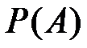
=事件可能出现的结果数÷所有可能出现的结果数．【详解】解：∵袋子中仅有3个红球、2个黄球和1个白球，从袋子中随机摸出一个球，
∴摸出的球是白球的概率是
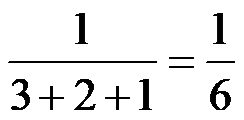
．故选：A．
5. 若关于x的一元二次方程 有两个相等的实数根，则实数a的值为（ ）
有两个相等的实数根，则实数a的值为（ ）
A.  B.
B.  C. 1D. 4
C. 1D. 4
【答案】C
【解析】
【分析】本题考查根的判别式，根据方程有两个相等的实数根，得到
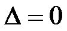
，进行求解即可．【详解】解：由题意，得：
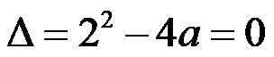
，解得： ；
；
故选C．
6. 2025年5月29日，行星探测工程天问二号探测器在西昌卫星发射中心成功发射，开启对近地小行星2016HO3的探测与采样返回之旅．已知该小行星与地球的最近距离约为月球远地点距离的45倍，月球远地点距离约为 ，则该小行星与地球的最近距离约为（ ）
，则该小行星与地球的最近距离约为（ ）
A.  B.
B.  C.
C.  D.
D. 
【答案】C
【解析】
【分析】此题考查了科学记数法表示较大的数．根据题意，小行星与地球的最近距离为月球远地点距离的45倍，月球远地点距离已知为，直接计算两者的乘积并用科学记数法表示即可．
【详解】解：月球远地点距离为，小行星的距离是该值的45倍，即：
 ．
．
故选：C
7. 如图， ，点A在射线
，点A在射线 上，以点O为圆心，
上，以点O为圆心， 长为半径画弧，交射线
长为半径画弧，交射线 于点B．若分别以点A，B为圆心，
于点B．若分别以点A，B为圆心， 长为半径画弧，两弧在
长为半径画弧，两弧在 内部交于点C，连接
内部交于点C，连接 ，则
，则 的大小为（ ）
的大小为（ ）

A.  B.
B.  C.
C.  D.
D. 
【答案】B
【解析】
【分析】本题主要考查了全等三角形的判定与性质，等边三角形的判定与性质，三角形内角和定理等知识点，熟练掌握各知识点并灵活运用是解题的关键．
连接 ，则由作图可得
，则由作图可得 ，那么
，那么 为等边三角形，可证明
为等边三角形，可证明 ，再根据全等三角形性质以及三角形内角和定理即可求解．
，再根据全等三角形性质以及三角形内角和定理即可求解．
 详解】解：如图，连接，
详解】解：如图，连接，

由作图可得，，
∴为等边三角形，
∴ ，
，
∵ ，
，
∴，
∴ ，
， ，
，
∴ ，
，
故选：B．
8. 如图，在平面直角坐标系 中，，
中，， 分别是横、纵轴正半轴上的动点，四边形
分别是横、纵轴正半轴上的动点，四边形 是矩形，函数
是矩形，函数 的图象与边交于点
的图象与边交于点 ，与边
，与边 交于点
交于点 （，不重合）．给出下面四个结论：
（，不重合）．给出下面四个结论：

① 与
与 的面积一定相等；
的面积一定相等；
② 与
与 的面积可能相等；
的面积可能相等；
③一定是锐角三角形；
④可能是等边三角形．
上述结论中，所有正确结论的序号是（ ）
A. ①③B. ①④C. ②③D. ②④
【答案】B
【解析】
【分析】本题考查了反比例函数与几何综合，反比例函数的图形和性质，矩形的性质，熟练掌握反比例函数图象的性质是解题的关键．根据矩形的性质结合反比例函数 的意义即可判断①②，根据等边三角形和反比例函数的对称性即可判断④，根据
的意义即可判断①②，根据等边三角形和反比例函数的对称性即可判断④，根据 是反比例函数图象上的动点，可得
是反比例函数图象上的动点，可得 或
或 为钝角，即可判断③，即可求解．
为钝角，即可判断③，即可求解．
【详解】解：∵四边形是矩形，
∴
又∵是反比例函数图象上的动点， 轴，
轴， 轴，
轴，
∴
∴ ，即与的面积一定相等；故①正确，
，即与的面积一定相等；故①正确，
由①可得
当与的面积相等时，如图，连接，

∴
∴在直线 上，则重合，
上，则重合，
∴与的面积不可能相等；
∵等边三角形和反比例函数都是轴对称图形，当对称轴为直线 ，可能是等边三角形，故④正确．
，可能是等边三角形，故④正确．
如图

当在的同侧时，可能是钝角三角形，故③错误

综上，①④正确、②③错误，
故选：B．
第二部分 非选择题
二、填空题（共16分，每题2分）
9. 若
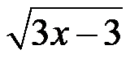
在实数范围内有意义，则实数x的取值范围是_______．【答案】
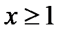
【解析】
【分析】本题主要考查二次根式有意义的条件以及解一元一次不等式，熟练掌握二次根式有意义的条件是解题的关键．
此题可根据二次根式有意义的条件“被开方数要为非负数”得到不等式求解．
【详解】解：∵在实数范围内有意义，
∴
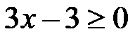
，解得：，
故答案为：．
10. 分解因式：
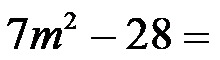
_______．【答案】
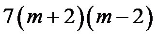
【解析】
【分析】此题考查了提公因式法与公式法的综合运用，熟练掌握因式分解的方法是解本题的关键．
原式提取7，再利用平方差公式分解即可．
【详解】解：
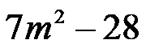
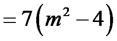
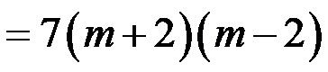
，故答案为：．
11. 方程
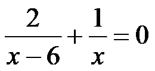
的解为_______．【答案】
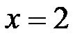
【解析】
【分析】本题主要考查了解分式方程，先把原方程去分母化为整式方程，再解方程并检验即可得到答案．
【详解】解：
去分母得：
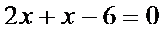
，移项，合并同类项得：
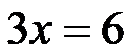
，系数化为1得：，
检验，当时，
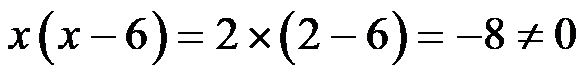
，∴是原方程的解，
故答案为：．
12. 某地区七年级共有2000名男生．为了解这些男生的体重指数（
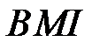
）分布情况，从中随机抽取了100名男生，测得他们的数据（单位：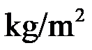
），并根据七年级男生体质健康标准整理如下：等级 | 低体重 | 正常 | 超重 | 肥胖 |
| 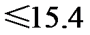 | 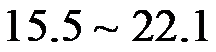 | 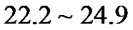 | 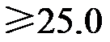 |
人数 | 6 | 75 | 15 | 4 |
根据以上信息，估计该地区七年级2000名男生中等级为正常的人数是_______．
【答案】
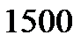
【解析】
【分析】本题考查了由样本估计总体，用乘以样本中等级为正常的人数所占的比例即可得解，熟练掌握以上知识点并灵活运用解此题的关键．
【详解】解：由题意可得：该地区七年级2000名男生中等级为正常的人数是
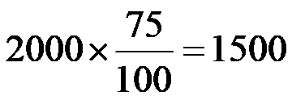
人，故答案为：．
13. 能说明命题“若
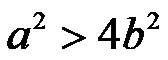
，则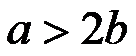
”是假命题的一组实数a，b的值为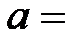
_______，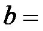
_______．【答案】 ①.
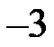
（答案不唯一） ②. 1（答案不唯一）【解析】
【分析】本题主要考查了命题与定理、反证法等知识点，掌握判断一个命题是假命题的时候可以举出反例是解题的关键．
根据举反例的方法找到a，b满足，但是不满足即可解答．
【详解】解：当 ，
，
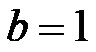
时，，但是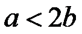
．故答案为：，1（答案不唯一）．
14. 如图， 是地球的示意图，其中表示赤道，
是地球的示意图，其中表示赤道， ，
， 分别表示北回归线和南回归线，
分别表示北回归线和南回归线，
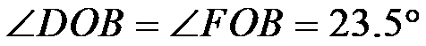
．夏至日正午时，太阳光线所在直线经过地心O，此时点F处的太阳高度角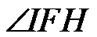
（即平行于的光线与的切线所成的锐角）的大小为_______°．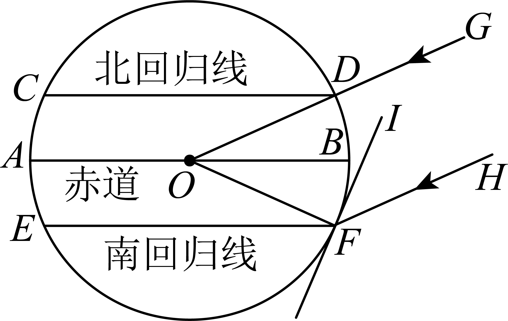
【答案】43
【解析】
【分析】本题考查了三角形内角和定理，平行线的性质，读懂题意并熟练掌握知识点是解题的关键．设与交于点K，先由三角形内角和定理求出
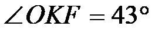
，再根据平行线的性质求解即可．【详解】解：如图，设与交于点K，
∵，
∴
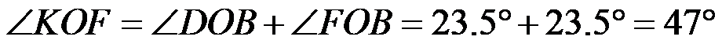
，在中，
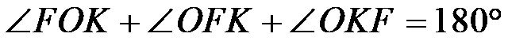
，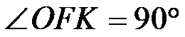
，∴，
∵，
∴
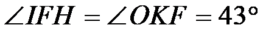
，故答案为：
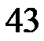
．15. 如图，在正方形 中，点E在边上，，垂足为F．若
中，点E在边上，，垂足为F．若
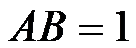
，，则的面积为_______．【答案】##0.375
【解析】
【分析】本题考查了正方形的性质，平行线的性质，解直角三角形，直角三角形的性质，熟练掌握知识点是解题的关键．过点F分别作，垂足为M，N，连接 ，则，先根据平行线间的距离处处相等得出，继而得出，通过解直角三角形得出，即可求解．
，则，先根据平行线间的距离处处相等得出，继而得出，通过解直角三角形得出，即可求解．
【详解】解：过点F分别作，垂足为M，N，连接，则，
∵四边形为正方形，
∴，
∴，
∴，
∴，
∵,
∴，
∵，垂足 F，，，
F，，，
∴，
∴，
∴，
∴，
∴，
故答案为：．
16. 某企业研发并生产了一种新设备，计划分配给A，B，C，D四家经销商销售．当一家经销商将分配到的n台设备全部售出后，企业从该经销商处获得的利润（单位：万元）与n的对应关系如下：
| | 
| | | | | … |
A | 40 | 60 | | | | | |
B | 30 | 55 | 75 | 90 | 100 | 105 | |
C | 20 | 40 | 60 | 70 | 80 | 90 | … |
D | 14 | 38 | 62 | 86 | 110 | 134 | … |
（1）如果企业将5台设备分配给这四家经销商销售，且每家经销商至少分配到1台设备，为使5台设备都售出后企业获得的总利润最大，应向经销商_______分配2台设备（填“A”“B”“C”或“D”）；
（2）如果企业将6台设备分配给这四家经销商中的一家或多家销售，那么6台设备都售出后，企业可获得的总利润的最大值为_______万元．
【答案】 ①. ②.
【解析】
【分析】本题考查列举等可能的结果，根据表格列举出增长量的变化是解题关键．
（1）分别计算各经销商销售完第2台比第1台的利润的增长量，比较即可得答案；
（2）分别求出一家分配时、四家分配时、三家分配时、两家分配时的最大利润，比较即可得答案．
【详解】解：（1）当时，
经销商的利润为，比时增加（万元），
经销商的利润为，比时增加（万元），
 经销商的利润为，比时增加（万元），
经销商的利润为，比时增加（万元），
 经销商的利润为，比时增加（万元），
经销商的利润为，比时增加（万元），
∵，
∴应向经销商分配2台设备．
（2）当给这四家经销商中的一家分配时，最大利润为经销商的万元，
当分配给多家销售时：
当分配四家时，最大利润为（万元），
当分配给三家时，最大利润为（万元），
当分配给两家时，最大利润为（万元）或（万元），
综上所述：企业可获得的总利润的最大值为万元．
故答案为：，
三、解答题（共68分，第17-19题每题5分，第20题6分，第21题5分，第22题6分，第23题5分，第24题6分，第25题5分，第26题6分，第27-28题每题7分）解答应写出文字说明、演算步骤或证明过程．
17. 计算： ．
．
【答案】
【解析】
【分析】本题考查了含特殊角的三角函数值的混合运算，熟练掌握运算法则是解题的关键．
分别计算绝对值，化简二次根式，计算负整数指数幂，代入特殊角的三角函数值并进行乘法计算，再进行加减计算即可．
【详解】解：

 ．
．
18. 解不等式组：
【答案】
【解析】
【分析】本题主要考查了解一元一次不等式组，先求出每个不等式的解集，再根据 “同大取大，同小取小，大小小大中间找，大大小小找不到（无解）”求出不等式组的解集即可．
【详解】解：
解不等式①得：，
解不等式②得：，
∴原不等式组的解集为．
19. 已知，求代数式的值．
【答案】
【解析】
【分析】本题主要考查了分式的化简求值，熟练掌握运算法则是解题的关键．
先对分式的分子分母进行因式分解，化至最简分式，再将变形，进行整体代入求值．
【详解】解：原式
，
∵，
∴，
∴原式．
20. 如图，在中，D，E分别为的中点，，垂足为F，点G在 的延长线上，．
的延长线上，．
（1）求证：四边形是矩形；
（2）若，，，求和的长．
【答案】（1）见解析 （2）
【解析】
【分析】本题主要考查了矩形的判定，三角形中位线定理，勾股定理，解直角三角形，熟知相关知识是解题的关键．
（1）由三角形中位线定理可得，即，则可证明四边形是平行四边形，再由，即可证明平行四边形是矩形；
（2）求出，解得到，则；由线段中点的定义可得；过点A作于H，解得到，则，再利用勾股定即可求出的长．
【小问1详解】
证明：∵D，E分别为的中点，
∴是的中位线，
∴，即，
∵，
∴四边形是平行四边形，
又∵，
∴平行四边形是矩形；
【小问2详解】
解：∵，
∴；
∵，
∴，
在中，，，
∴，
∴；
∵点D为的中点，
∴；
如图所示，过点A作于H，
在中，，
∴，
在中，由勾股定理得．
21. 在平面直角坐标系中，函数 的图象经过点和．
的图象经过点和．
（1）求k，b的值；
（2）当时，对于x的每一个值，函数 的值既小于函数的值，也小于函数的值，直接写出m的取值范围．
的值既小于函数的值，也小于函数的值，直接写出m的取值范围．
【答案】（1）
（2）
【解析】
【分析】本题主要考查了待定系数法求一次函数解析式，一次函数与不等式之间的关系，熟知一次函数的相关知识是解题的关键．
（1）直接利用待定系数法求解即可；
（2）由（1）可得函数的解析式为，函数的解析式为，当时，则，当时，则，根据当时，两个不等式都成立可得；当，时，和 恒成立；当时，则且，再分当时，则，当时，则，两种情况分别解不等式即可得到答案．
恒成立；当时，则且，再分当时，则，当时，则，两种情况分别解不等式即可得到答案．
【小问1详解】
解：∵在平面直角坐标系中，函数的图象经过点和，
∴，
解得；
【小问2详解】
解：由（1）可得函数的解析式为，函数的解析式为，
当时，则，
当时，则，
∵当时，对于x的每一个值，函数的值既小于函数的值，也小于函数的值，
∴，且，
∴，
当，时，和恒成立，故符合题意；
当时，则且，
当时，则，
解不等式得，解不等式，
∴；
当时，则，
解不等式得，解不等式得，此时不符合题意；
综上所述，．
22. 北京风筝制作技艺是国家级非物质文化遗产．为制作一只京燕风筝，小明准备了五根直竹条（如图1）：一根门条、两根等长的膀条和两根等长的尾条．他将门条和膀条分别烤弯后与尾条一起扎成风筝的骨架（如图2），其头部高、胸腹高与尾部高的比是 ．已知单根膀条长是胸腹高的5倍，门条比单根膀条短10cm，图1中的长是门条长的
．已知单根膀条长是胸腹高的5倍，门条比单根膀条短10cm，图1中的长是门条长的 ，
， 的长均等于胸腹高．求这只风筝的骨架的总高．
的长均等于胸腹高．求这只风筝的骨架的总高．

【答案】
【解析】
【分析】本题主要考查了一元一次方程的应用，弄清量之间的关系、列出一元一次方程是解题的关键．
设胸腹高为 ，则单根膀条长为
，则单根膀条长为 ，门条
，门条 的长度为
的长度为 ，
， ，
， ，头部高为x，尾部高为
，头部高为x，尾部高为 ，这只风筝的骨架的总高为
，这只风筝的骨架的总高为 ；由
；由 列方程求出
列方程求出 ，进而求出风筝的骨架的总高即可．
，进而求出风筝的骨架的总高即可．
【详解】解：设胸腹高为，则单根膀条长为，门条的长度为，，，头部高为x，尾部高为，这只风筝的骨架的总高为，
由，可得： ，解得：；
，解得：；
所以这只风筝的骨架的总高 ．
．
答：这只风筝的骨架的总高．
23. 校田径队教练选出甲、乙、丙、丁四名运动员参加100米比赛．对这四名运动员最近10次100米跑测试成绩（单位：s）的数据进行整理、描述和分析．下面给出了部分信息．
a．甲、乙两名运动员10次测试成绩的折线图：

b．丙运动员10次测试成绩：12.4 12.4 12.5 12.7 12.8 12.8 12.8 12.8 12.9 12.9
c．四名运动员10次测试成绩的平均数、中位数、方差：
| 甲 | 乙 | 丙 | 丁 |
平均数 | 12.5 | 12.5 | p | 12.5 |
中位数 | m | 12.5 | 12.8 | 12.45 |
方差 | 0.056 | n | 0.034 | 0.056 |
（1）表中m的值为_______；
（2）表中n_______0.056（填“>”“=”或“<”）；
（3）根据这10次测试成绩，教练按如下方式评估这四名运动员的实力强弱：首先比较平均数，平均数较小者实力更强；若平均数相等，则比较方差，方差较小者实力更强；若平均数、方差分别相等，则测试成绩小于平均数的次数较多者实力更强．
评估结果：这四名运动员按实力由强到弱依次为_______．
【答案】（1）
（2）
（3）乙、丁、甲、丙
【解析】
【分析】本题考查了折线统计图，计算方差，中位数，平均数等知识点，正确理解题意是解题的关键．
（1）根据中位数定义即可求解 ；
；
（2）根据方差计算公式求解，再比较即可；
（3）根据中位数、方差、平均数，结合题意分析即可．
【小问1详解】
解：甲的10次测试成绩排列为： ，
，
∴中位数 ，
，
故答案为：；
【小问2详解】
解：乙的10次测试成绩平均数为： ，
，
∴方差为：
∴ ，
，
故答案为：；
【小问3详解】
解：丙的平均数 ，
，
∴丙的平均数最大，则实力最弱，
∵方差 ，
，
∴乙实力最强，
∵丁的测试成绩中位数为 ，
，
∴第 次成绩和为
次成绩和为 ，
，
∴前5次测试成绩小于平均数，
∵甲测试成绩小于平均数12.5的次数有2次，
∴丁比甲强，
∴这四名运动员按实力由强到弱依次为：乙、丁、甲、丙，
故答案为：乙、丁、甲、丙．
24. 如图，过点P作的两条切线，切点分别为A，B，连接， ，
， ，取的中点C，连接并延长，交于点D，连接
，取的中点C，连接并延长，交于点D，连接 ．
．

（1）求证： ；
；
（2）延长交 的延长线于点E．若
的延长线于点E．若 ，
， ，求的长．
，求的长．
【答案】（1）见解析；
（2）长为44．
【解析】
【分析】（1）利用切线长定理得平分 ，利用圆周角定理得
，利用圆周角定理得 ，等量代换即可证明；
，等量代换即可证明；
（2）延长 交于点F，连接
交于点F，连接 ，利用条件求出线段长，再利用角度转换证明三角形相似，最后根据相似求得长．
，利用条件求出线段长，再利用角度转换证明三角形相似，最后根据相似求得长．
【小问1详解】
证明：
 ，
， 分别切于A点，B点，
分别切于A点，B点，
 平分，
平分，
 ，
，
又 ，
，
，
．
【小问2详解】
延长交于点F，连接，则 ，
，

，分别切于A点，B点，

C为的中点，
 ，
，
 ，
，
又，，
 ，
，
 ，
，
 ，
， ，
，
 ，
，
 ，
，
又 ，
，
 ，
，
 ，
， ，
，
 ，
， ，
，
 ，
，
 ，
，
 ．
．
【点睛】本题主要考查切线长定理，圆周角定理及推论，勾股定理，三角函数，相似三角形的判定与性质等知识点，熟记切线长定理，圆周角定理，并且能根据题意作出合适的辅助线是解题的关键．
25. 工厂对新员工进行某种工艺品制作的培训．在完成理论学习后，新员工接下来先使用智能辅助训练系统进行一次为期T日（T可取0，1，2或3）的模拟练习，然后开始试制．记一名新员工在试制阶段的第x日单日制成的合格品的个数为y，根据以往的培训经验，对于给定的T，可以认为y是x的函数．当和时，部分数据如下：
x | 0 | 1 | 2 | 3 | 4 | 5 | 6 | 7 | 8 | 9 |
时y的值 | 0 | 7 | 8 | 10 | 12 | 16 | 20 | 23 | 25 | 26 |
时y的值 | 0 | 26 | 37 | 43 | m | 48 | 50 | 51 | 52 | 53 |
时，从试制阶段的第2日起，一名新员工每一日比前一日多制成的合格品的个数逐渐减少或保持不变．
对于给定的T，在平面直角坐标系中描出该T值下各数对所对应的点，并根据变化趋势用平滑曲线连接，得到曲线．当和时，曲线 ，如图所示．
，如图所示．
（1）观察曲线，当整数x的值为_______时，y的值首次超过35；
（2）写出表中m的值，并在给出的平面直角坐标系中画出时的曲线 ；
；
（3）新员工小云和小腾刚刚完成理论学习，接下来进行模拟练习和试制．
①若新员工单日制成不少于45个合格品即可获得“优秀学员”证书，根据上述函数关系，小云最早在完成理论学习后的第_______日可获得“优秀学员”证书；
②若工厂希望小腾在完成理论学习后的4日内制成的合格品的总数最多，根据上述函数关系，在这4日中应安排小腾先进行_______日的模拟练习．
【答案】（1）6 （2）；画图见解析
（3）①7；②1
【解析】
【分析】（1）找图象上y的值首次超过35时的x值；
（2）根据第2日起，一名新员工每一日比前一日多制成的合格品的个数逐渐减少或保持不变，第5日比第3日多试制5个合格产品，可知第4日比第3日多3个合格产品，即得；运用表格数据在平面直角坐标系描点画出函数图象；
（3）①根据单日制成不少于45个合格品的只有与，： 时，得；：，当时，得，比较即得小云最早在完成理论学习后的第7日可获得“优秀学员”证书；②分模拟练习日，日，日，日，求出对应的4日内的试制日数，试制的合格产品数，比较即得应安排小腾先进行的模拟练习日数．
【小问1详解】
解：由曲线看出，当整数x的值为6时，y的值首次超过35
故答案为：6
【小问2详解】
解：∵日的模拟练习时，从试制阶段的第2日起，一名新员工每一日比前一日多制成的合格品的个数逐渐减少或保持不变，在试制阶段的第3日单日制成的合格品43个，第5日单日制成的合格品48个
∴相差（个），
把5分成两个接近的数，，
∴第4日增加3个，第5日增加2个，
∴，
画出时的曲线：
【小问3详解】
解：①单日制成不少于45个合格品的只有与，
：日的模拟练习，然后试制阶段第日制成的合格品达到个，
∴；
：日的模拟练习，然后试制阶段第日制成的合格品达到个，
∴，
∵，
故小云最早在完成理论学习后的第7日可获得“优秀学员”证书；
故答案为：7；
②当模拟练习日时，
4日内的试制时间日，
4日的合格产品分别是7，8，10，12，
∴合格产品共有；
当模拟练习日时，
4日内的试制时间日，
3日的合格产品分别是12，19，26，
∴合格产品共有；
当模拟练习日时，
4日内的试制时间日，
2日的合格产品分别是20，30，
∴合格产品共有；
当模拟练习日时，
4日内的试制时间日，
1日的合格产品是26；
∵，
∴希望小腾在完成理论学习后的4日内制成的合格品的总数最多，根据上述函数关系，在这4日中应安排小腾先进行1日的模拟练习．
故答案为：1．
【点睛】本题考查了表格法与图象法表示函数．熟练掌握函数表示的表格法与图象法，根据表格信息画函数图象，函数的图象和性质，函数的增减性质，求函数值或自变量的值，是解题的关键．
26. 在平面直角坐标系中，抛物线经过点O和点．
（1）求c的值，并用含a的式子表示b；
（2）过点作x轴的垂线，交抛物线于点M，交直线于点N．
①若，，求 的长；
的长；
②已知在点P从点O运动到点的过程中，的长随的长的增大而增大，求a的取值范围．
【答案】（1）0，
（2）①4；②且
【解析】
【分析】本题主要考查了待定系数法求二次函数解析式、二次函数的图像与性质、二次函数与一次函数综合应用等知识，解题关键是运用数形结合和分类讨论的思想分析问题．
（1）分别将，代入抛物线解析式，即可获得答案；
（2）①结合题意，分别确定点的坐标，即可获得答案；②首先确定，再分 和两种情况分析求解即可．
和两种情况分析求解即可．
小问1详解】
解：将点代入，抛物线，
可得，
∴该抛物线解析式为，
将点代入，抛物线，
可得，解得；
【小问2详解】
①若，则该抛物线及直线解析分别为，，
当时，可有点，
如下图，
∵轴，
∴，
将代入，可得，即，
将代入，可得，即，
∴；
②当点P从点O运动到点的过程中，
∵轴，，
∴，
将 代入，可得，即，
代入，可得，即，
将代入，可得，即，
∴，
令，即，解得或，
若，可有，即点在 轴右侧，如下图，
轴右侧，如下图，
当时，可有，其图像开口向下，对称轴为，
若的长随的长的增大而增大，即的长随 的增大而增大，
的增大而增大，
则，解得，
当时，可有，其图像开口向上，对称轴为，不符合题意；
若，可有，即点在轴左侧，如下图，
当时，可有，其图像开口向上，对称轴为，
若的长随的长的增大而增大，即的长随的减小而增大，
则，解得，
∴．
综上所述，a的取值范围为且．
27. 在中， ，
， ，点在射线上，连接，将线段绕点逆时针旋转
，点在射线上，连接，将线段绕点逆时针旋转 得到线段
得到线段 （点
（点 不在直线上），过点作
不在直线上），过点作 ，交直线于点
，交直线于点 ．
．
（1）如图1， ，点与点重合，求证：
，点与点重合，求证： ；
；
（2）如图2，点，都在的延长线上，用等式表示与的数量关系，并证明．
【答案】（1）见解析 （2）
【解析】
【分析】本题考查了旋转的性质，全等三角形的性质与判定，等腰三角形的性质，三角形内角和定理的应用，平行四边形的性质与判定，熟练掌握旋转的性质是解题的关键；
（1）根据，得出，根据旋转可得，，进而证明四边形是平行四边形，得出，；即可得证；
（2）在上取一点 ，使得，证明得出，，进而根据三角形内角和定理得出，根据平行线的性质得出，进而得出，根据等角对等边可得，则，根据三线合一可得，进而根据，即可得证．
，使得，证明得出，，进而根据三角形内角和定理得出，根据平行线的性质得出，进而得出，根据等角对等边可得，则，根据三线合一可得，进而根据，即可得证．
【小问1详解】
证明：∵，
∴
∵线段绕点逆时针旋转得到线段，点与点重合
∴，，
∴，
∴
∵，
∴四边形是平行四边形，
∴，
∴；
【小问2详解】
，
证明：如图，在上取一点，使得
∴，
∴
∵将线段绕点逆时针旋转得到线段，
∴
∴
∴
∴
∴，
又∵
∴
∵，
∴
∴
∴
∴
∵，
∴
∴
28. 在平面直角坐标系中，对于点和 给出如下定义：若上存在两个不同的点，，对于上任意满足
给出如下定义：若上存在两个不同的点，，对于上任意满足 的两个不同的点
的两个不同的点 ，
， ，都有
，都有 ，则称点是的关联点，称
，则称点是的关联点，称 的大小为点与的关联角度．（本定义中的角均指锐角、直角、钝角或平角）
的大小为点与的关联角度．（本定义中的角均指锐角、直角、钝角或平角）
（1）如图，的半径为 ．
．
①在点 ，
， ，
， 中，点_______是的关联点且其与的关联角度小于
中，点_______是的关联点且其与的关联角度小于 ，该点与的关联角度为
，该点与的关联角度为 ；
；
②点 在第一象限，若对于任意长度小于的线段，上所有的点都是的关联点，则的最小值为_______；
在第一象限，若对于任意长度小于的线段，上所有的点都是的关联点，则的最小值为_______；
（2）已知点 ，
， 经过原点，线段上所有的点都是的关联点，记这些点与的关联角度的最大值为
经过原点，线段上所有的点都是的关联点，记这些点与的关联角度的最大值为 ．若
．若 ，直接写出的取值范围．
，直接写出的取值范围．
【答案】（1）①，；②
（2）或或
【解析】
【分析】本题考查了新定义，直线与圆的位置关系，点与圆的位置关系，理解新定义是解题的关键；
（1）①根据新定义可得的是的关联点且其与的关联角度小于，进而根据切线的性质，解,即可求得，即可求解．
②根据定义可得为外一点，由，的半径为，得出，进而当时，勾股定理求得的值，即可求解；
（3）由（1）可得，当在圆的外部时，且为圆的切线时，最大，且距离圆心越近，根据，得出，根据已知可得，上距离最近的点在的圆环内，根据是固定线段，让移动，分四种情况讨论，求得的临界值，即可求解．
【小问1详解】
解：①根据定义可得：当在上时，不存在都有，当在内部时，过的直径使得的关联角度为，当在的外部时，且为的切线时，最大；
如图，是的关联点且其与的关联角度小于，与的关联角度为，与的关联角度大于，
∵，的半径为，
∴，且是的切线，
∴，
∴
∴，即与的关联角度为
故答案为：，．
②根据定义可得为外一点，
∵，的半径为，
∴，当时，
如图，取点，则，
∴，
∴的最小值为，
故答案为：．
【小问2详解】
解：由（1）可得，当在圆的外部时，且为圆的切线时，最大，且距离圆心越近，
∵，
∴当时，由，如图，
∴四边形是矩形，
由∵
∴四边形是正方形，
∴
当时，
∵点，经过原点，线段上所有的点都是的关联点，则，
∴上距离最近的点在的圆环内，
①和的圆相切，如图，
∴
解得：
②和半径为的圆相切时，如图，
∴（不包含临界值）
∴
③当在半径为的圆，如图
解得：（不包含临界值）
∴时，都在内部，此时
④当在半径为的圆，如图
设的半径为，则，
∵，
解得：，
∴时，此时，
综上所述，或或．